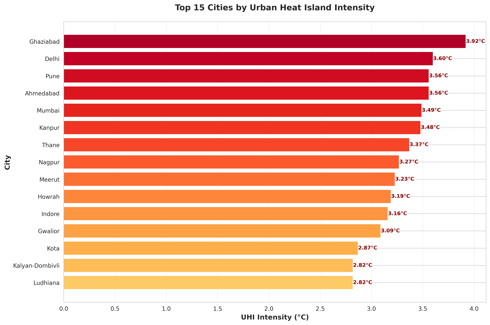

Data Visualizations
UHI Factors Analysis
Relationship between Urban Heat Island intensity and key contributing factors

Interpretation:
- Impervious Surfaces: Strong positive correlation - cities with more concrete/asphalt experience higher UHI intensity
- Vegetation (NDVI): Strong negative correlation - more greenery significantly reduces urban heat
- Population Density: Moderate positive correlation - denser cities tend to be hotter
- Water Proximity: Weak correlation - distance to water bodies has limited cooling effect in highly urbanized areas
Correlation Matrix
Relationships between all UHI factors

Key Observations:
- Strongest Positive: Impervious Surface ↔ UHI Intensity (r=0.74) - Primary driver of urban heat
- Strongest Negative: NDVI ↔ UHI Intensity (r=-0.70) - Vegetation is the best natural cooling solution
- Interconnected Factors: Building density, impervious surfaces, and population density are highly correlated
- Mitigation Potential: Albedo and urban greenness show promise as intervention points
Top 15 Cities by UHI Intensity
Cities requiring urgent heat mitigation interventions

Critical Findings:
- High-Risk Zone: 10 cities exceed 3.0°C UHI intensity - urgent action needed
- Regional Pattern: Northern cities (Delhi NCR, UP cities) dominate the top rankings
- Maharashtra Cluster: Multiple cities from Maharashtra in top 15 indicate state-level trends
- Actionable Insight: These cities should be prioritized for green infrastructure investments
Vegetation vs UHI Intensity
Impact of vegetation on urban heat (bubble size = population, color = impervious surface)

Strategic Insights:
- Clear Inverse Relationship: Higher NDVI (more vegetation) = Lower UHI intensity
- Green City Success: Bangalore and Bhopal show how high vegetation can keep cities cool despite large populations
- Intervention Opportunity: Cities with low NDVI and high UHI (red zone) should focus on tree planting campaigns
- Scalable Solution: Every 0.1 increase in NDVI can reduce UHI by ~0.3°C